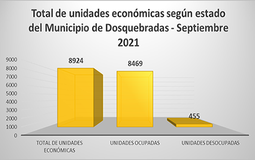
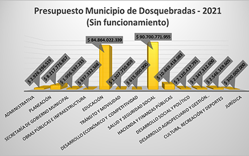

Alcaldia de Dosquebradas
Plan desarrollo
Rendición cuentas
Banco proyectos
Políticas públicas
POT
Biblioteca digital
Estadística
Secretaría de planeación municipal
Información estadística | ECONOMICA
Información económica del municipio de Dosquebradas, área metropolitana y/o departamento
Productores agrícolas del Municipio de Dosquebradas
Productores pecuarios del Municipio de Dosquebradas

Total de unidades económicas según estado
Total de unidades económicas según sector
Total de unidades económicas según tipo

Presupuesto Municipio de Dosquebradas 2021
Ingresar al repositorio completo de documentos estadisticos